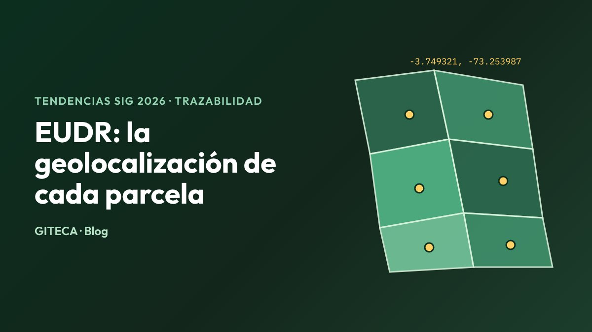

EUDR: desde el 30 de diciembre de 2026, cada parcela exportada a Europa necesita su geolocalización
El reglamento europeo contra la deforestación entra en aplicación este 30 de diciembre. Madera, cacao y café que se vendan en la Unión Europea tendrán que demostrar, con coordenadas, que no vienen de áreas deforestadas después de 2020.

La novedad
El Reglamento (UE) 2023/1115, conocido como EUDR, fue postergado y simplificado por el Reglamento (UE) 2025/2650. Según la Comisión Europea, los operadores grandes y medianos deben cumplir sus obligaciones principales desde el 30 de diciembre de 2026, y las micro y pequeñas empresas desde el 30 de junio de 2027; en el caso de la madera, que ya estaba regulada, las fechas para los más pequeños pueden ser distintas, así que conviene revisar el texto legal.
- Productos: ganado, cacao, café, palma aceitera, caucho, soya y madera, y sus derivados.
- Requisito central: demostrar que el producto no proviene de tierras deforestadas después del 31 de diciembre de 2020 y que se produjo conforme a la ley del país.
- Geolocalización: cada declaración de diligencia debida incluye la ubicación de todas las parcelas de origen, con coordenadas de al menos seis decimales; las parcelas más grandes se describen con un polígono.
Por qué importa para el bosque
El Perú exporta café, cacao y madera a Europa, muchas veces desde pequeños productores de la selva. La EUDR convierte el SIG en una condición para vender: quien no pueda entregar polígonos confiables y un análisis de cambio de cobertura queda fuera de la cadena. Al mismo tiempo, es una oportunidad para ordenar catastros, cruzar parcelas con títulos habilitantes y demostrar el valor del bosque en pie.
Cómo lo aplicaríamos
Limitaciones y cuidados
- Norma en movimiento. El reglamento tuvo varias postergaciones y la Comisión preparó revisiones de simplificación; confirma siempre la versión vigente en fuentes oficiales.
- Definición de bosque. La EUDR usa la definición de la FAO, que puede no coincidir con las clases de los mapas nacionales; un análisis automático no reemplaza la verificación.
- Datos de productores. Polígonos y nombres de productores son datos personales: protégelos y compártelos solo con quien corresponde.